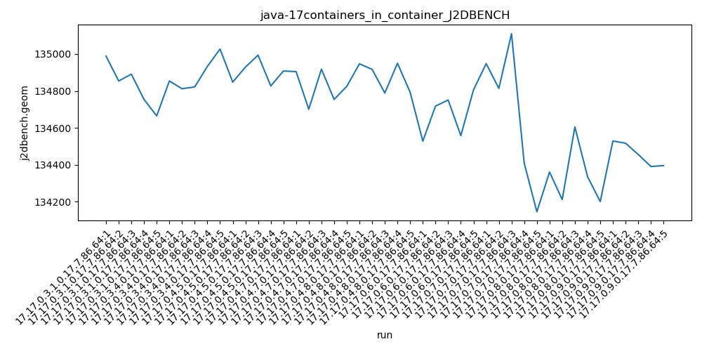
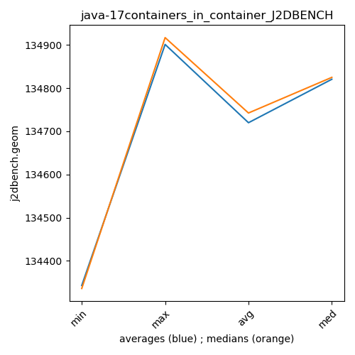

java-17 J2DBENCH
Context at bottom
/home/jvanek/git/benchmarks-in-nested-virtualisation-toolchain/final_results/containers_in_container_results/containers_in_container_DACAPO
java-17
J2DBENCH
/home/jvanek/git/benchmarks-in-nested-virtualisation-toolchain/final_results/containers_in_container_results/containers_in_container_SPECJBB
java-17
J2DBENCH
/home/jvanek/git/benchmarks-in-nested-virtualisation-toolchain/final_results/containers_in_container_results/containers_in_container_RADARGUNs3
java-17
J2DBENCH
/home/jvanek/git/benchmarks-in-nested-virtualisation-toolchain/final_results/containers_in_container_results/containers_in_container_J2DBENCH
java-17
J2DBENCH
containers_in_container_J2DBENCH
final score
Expected number of java-17 JDKs: 5
1st avgmed_alljdks_metric:
/home/jvanek/git/benchmarks-in-nested-virtualisation-toolchain/final_results/result_processing.py /home/jvanek/git/benchmarks-in-nested-virtualisation-toolchain/final_results/containers_in_container_results/containers_in_container_J2DBENCH j2dbench.geom False
values: [134989, 134854, 134891, 134754, 134665, 134854, 134812, 134822, 134933, 135027, 134848, 134929, 134994, 134827, 134908, 134905, 134701, 134918, 134754, 134825, 134947, 134917, 134789, 134950, 134793]

Expected number of iterations: 5
final number of values: 25 out of 25
Pass rate: 100.0%
values: (134665, 135027, 134864.24, 134854)

** accuracy from all jdks and runs
more is better
MIN: 134665
MAX: 135027
AVG: 134864.24
MED: 134854
Relative differences 1:
MIN-MAX: 0.0 %
MIN-AVG: 0.0 %
MIN-MED: 0.0 %
MAX-MIN: -0.0 %
MAX-AVG: -0.0 %
MAX-MED: -0.0 %
AVG-MED: -0.0 %
stored to java-17.properties. sort | uniq that!
2nd avgmed_by_jdk_metric:
values: [134830.6, 134889.6, 134901.2, 134820.6, 134879.2]

values: [134854, 134854, 134908, 134825, 134917]

values: (134820.6, 134901.2, 134864.24000000002, 134879.2)
values: (134825, 134917, 134871.6, 134854)

** accuracy from all jdks where runs were avged
more is better
MIN: 134820.6
MAX: 134901.2
AVG: 134864.24000000002
MED: 134879.2
Relative differences 1:
MIN-MAX: 0.0 %
MIN-AVG: 0.0 %
MIN-MED: 0.0 %
MAX-MIN: -0.0 %
MAX-AVG: -0.0 %
MAX-MED: -0.0 %
AVG-MED: 0.0 %
stored to java-17.properties. sort | uniq that!
** accuracy from all jdks where runs were medianed
more is better
MIN: 134825
MAX: 134917
AVG: 134871.6
MED: 134854
Relative differences 1:
MIN-MAX: 0.0 %
MIN-AVG: 0.0 %
MIN-MED: 0.0 %
MAX-MIN: -0.0 %
MAX-AVG: -0.0 %
MAX-MED: -0.0 %
AVG-MED: -0.0 %
stored to java-17.properties. sort | uniq that!
/home/jvanek/git/benchmarks-in-nested-virtualisation-toolchain/final_results/containers_in_container_results/containers_in_container_RADARGUNs1
java-17
J2DBENCH
/home/jvanek/git/benchmarks-in-nested-virtualisation-toolchain/final_results/containers_in_container_results/containers_in_container_JMH
java-17
J2DBENCH
pass rates:
containers_in_container_J2DBENCH=100.0%
Context:
- containers_in_container_results
- J2DBENCH